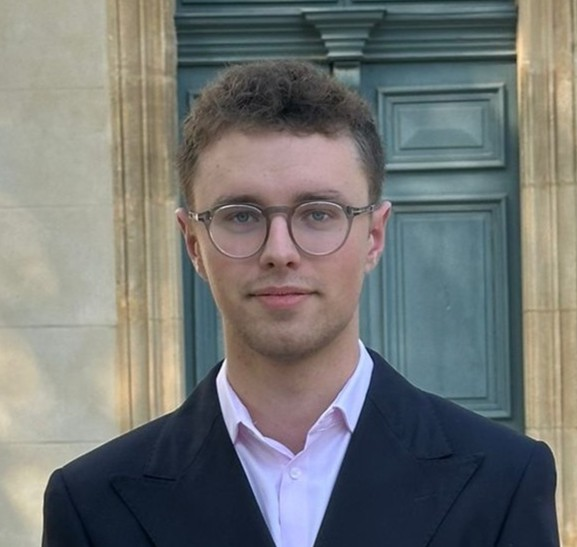

Arthur DORADOUX
Élève Ingénieur ISMIN | Futur Product Owner
Spécialisé en microélectronique et informatique, je souhaite évoluer vers des fonctions de Product Owner, au cœur du développement de produits technologiques.
Mon ambition est de compléter mon socle technique en y intégrant un apport solide en management, pilotage de projet et création de valeur, au service de l’innovation et du marché des nouvelles technologies.